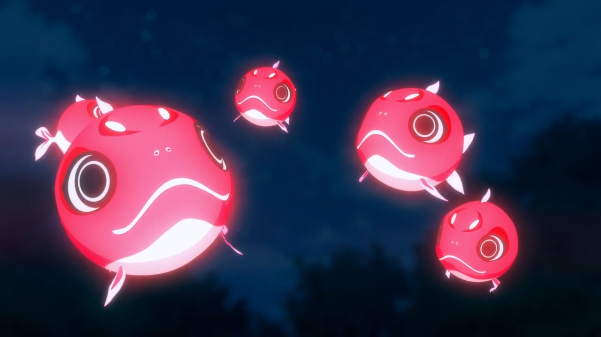

飛翔的魔女
| don't click |
do not click |
no clickkkkk |

主要登場角色
- 木幡真琴
- 生日2月22日，血液O型，身高160cm。
魔女，高中一年級，和阿圭同班。活潑、充滿好奇心。嚴重路癡。目前為了魔女的傳統而寄住在遠房親戚家，並學習各種魔女的工作。有時會在阿圭家中迷路。喜歡吃美食，阿圭每次推薦一些沒吃過的料理時會很興奮。在原本為阿圭奶奶生前耕作的田種菜。
- 倉本圭
- 生日2月2日，血液O型，身高175cm。
高中一年級，真琴的堂兄，真琴都稱其為「阿圭」。個性穩重，十分可靠，講話有條理，做事時會先列出一些注意事項。不放心讓真琴自己出門。非常擅長料理、園藝。每年會固定幾天和千夏去山上採野菜。害怕鬼，有一次進鬼屋時全程不敢看，緊抓著真琴不放。不相信許願。平時會看電影。
- 倉本千夏
- 生日8月8日，血液O型，身高127cm。
圭的妹妹，茜的弟子。天真活潑。一開始有點害怕真琴。喜歡真琴做的魔女長袍。不喜歡吃野菜。被帶來春天的使者的長相嚇到，以為是壞人，之後了解原因。帶來春天的使者則送一盆牽牛花給千夏作為賠禮。跟真琴養的貓奇多處得不錯。
- 木幡茜
- 生日5月1日，血液A型，身高170cm。
魔女，真琴的姊姊，古銅色肌膚、白色頭髮為其特色。喜歡別人的八卦，是個非常優秀的魔女，在魔女界算是有名的。喜歡到處旅行流浪，目前因為告一段落，也借住到阿圭家，順便教導妹妹一些魔術。預計幾天後會離開。因為千夏想成為魔女而成為師傅，決定讓千夏先從見習魔女開始。
- 石渡那央
- 生日12月21日，血液A型，身高162cm。
真琴的同班同學，與圭是中學時代的同學。家是經營酒鋪的，會幫忙送貨以賺取零用錢。喜歡番茄，討厭青蛙。真琴原本在野外發現稀有的植物風茄想送給她，但因為風茄十分怪異而拒絕。
- 犬養
- 生日10月2日，血液B型，身高170cm。
茜的朋友，因醉酒誤食茜做的魔法藥而變的長的像狗，唯有晚上才能恢復成原樣。曾經長期設占卜小攤來等待木幡茜，但結果等到了她的妹妹真琴，之後還是找到了茜並在其提醒後想起是自己喝醉誤食導致。長相是阿圭喜歡的類型。因早上為狗的樣子而改上夜間大學。
- 椎名杏子
- 生日7月1日，血液AB型，身高150cm。
魔女，是普通人無法進入的咖啡廳店主的女兒。與母親和幽靈小姐一起做招待。喜歡研究考古。
使魔為一隻叫奧羅爾的貓頭鷹。